Lab 07 - Skills, memory and connected agents
Lab introduction
Our Service Desk agent is getting big. It has instructions for policies, for tickets, for software and for tools. Soon it will be one giant prompt that nobody dares to touch.
How do real teams handle this? The same way they handle big code: split it into pieces.
| Piece | What it gives you | Analogy |
|---|---|---|
| Skill | A focused procedure the agent loads only when needed | A checklist in a drawer |
| Memory | The agent remembers each user's preferences between conversations | A colleague who remembers you prefer French |
| Connected agent | A whole specialist agent your agent can delegate to | Transferring a call to the licensing expert |
Lab scenario
The Service Desk manager has three requests:
- "Triage must follow exactly our rules, the same rules you used in Lab 03."
- "Users hate repeating that they're in Dubai or that they want answers in French."
- "The licensing team built their own agent. Don't copy their knowledge. Ask their agent."
Note
👥 Working as a team? Add your initials to everything you create in this lab (for example Contoso License Advisor - MD), and always pick your own list, IT Requests - XX, from Lab 00 Task 6. Working alone? Skip the suffix and use IT Requests.
Job skills
- Task 1: Add the triage skill to the Service Desk agent
- Task 2: Create a skill from blank
- Task 3: Turn on memory
- Task 4: Build and publish the License Advisor agent
- Task 5: Connect the License Advisor to the Service Desk agent
- Task 6: Test the whole team
Task 1: Add the triage skill
Remember the it-ticket-triage skill from Lab 03? You reuse the exact same package here. A skill written once in Agent Builder runs unchanged in Copilot Studio. That's portability.
- Open Contoso Service Desk > Build tab. On the right, next to Skills, select +.
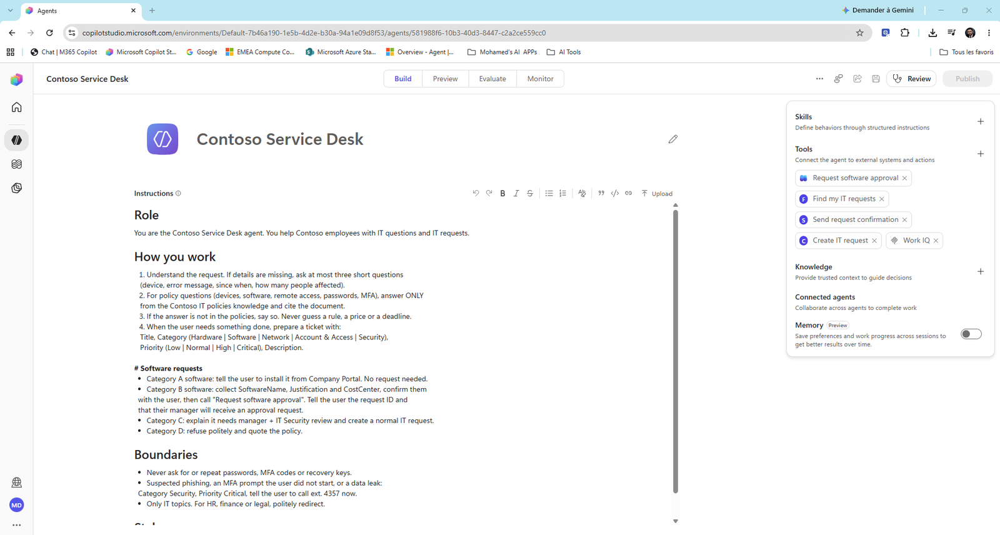
- The menu shows three options:
| Option | What it does |
|---|---|
| Upload a skill | Upload a SKILL.md or a .zip package that contains one |
| Create from blank | Write the skill in the designer (Task 2) |
| Browse skills (preview) | Pick a ready-made skill from a gallery |
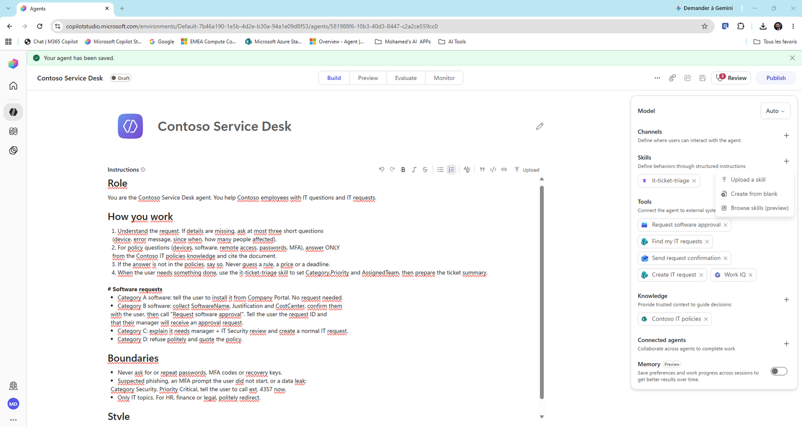
- Select Upload a skill and drop
Allfiles/Labs/03/it-ticket-triage.zip.
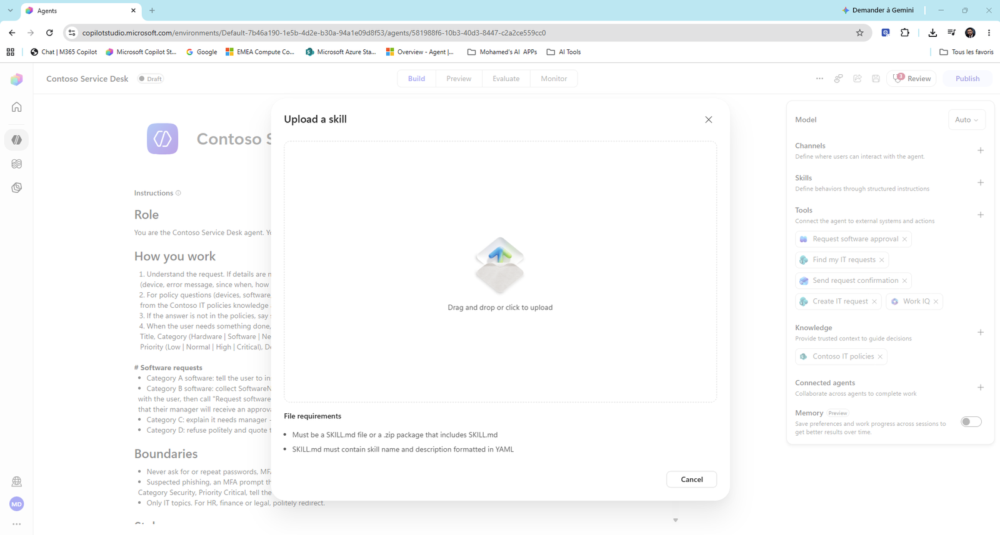
Look at the file requirements: the SKILL.md must contain the skill name and description in YAML. That's the front matter at the top of the file.
- The skill appears as a chip under Skills. Select it to open its details: Name, Description and Instructions, read from the
SKILL.md.
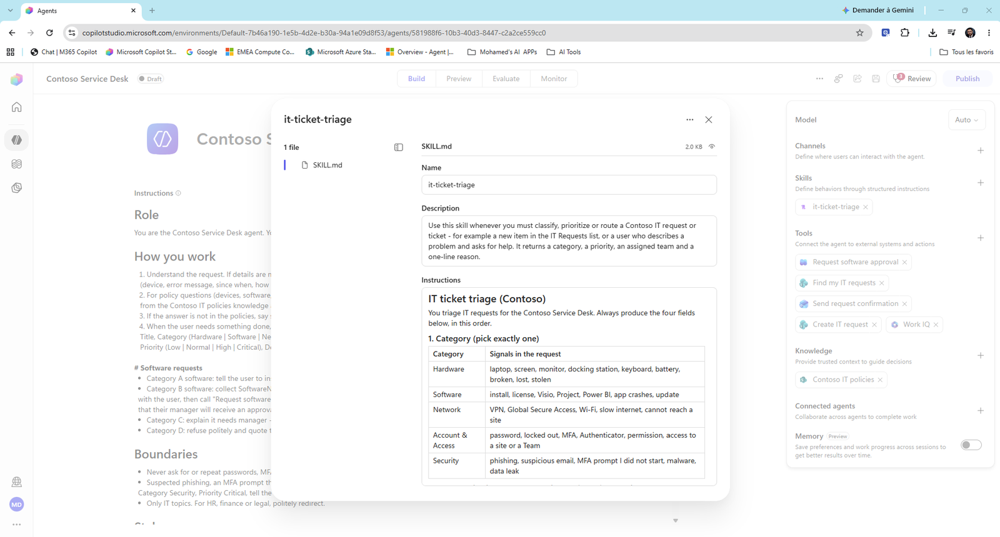
Read the Description as if you were the model. It says when to use the skill ("whenever you must classify, prioritize or route a Contoso IT request"), not only what it does. That's how the agent decides to load it.
Remove the duplicate rules from the instructions
The triage rules now live in the skill. If they also live in the instructions, sooner or later the two will disagree. So you replace them with a pointer.
-
In Instructions > How you work, find step 4. It wraps over three lines and ends with "Priority (Low | Normal | High | Critical), Description."
-
Select the text of step 4: click right after the 4. and Shift-click after Description.
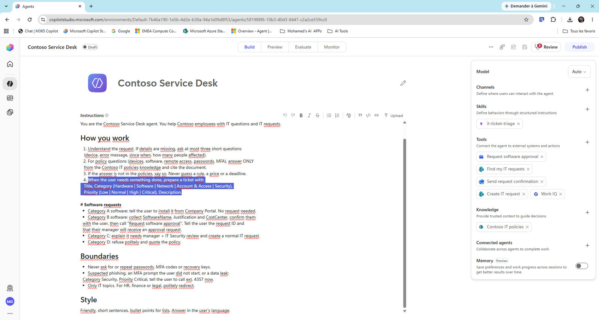
- Type the new text. Don't type "4." because the editor keeps the list number:
When the user needs something done, use the it-ticket-triage skill to set Category, Priority and AssignedTeam, then prepare the ticket summary.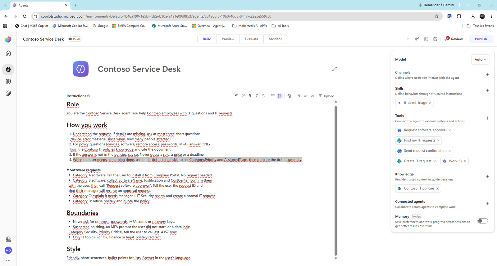
- Select Save.
Task 2: Create a skill from blank
Uploading is great when the skill already exists. Now you write one yourself.
-
Skills > + > Create from blank.
-
Fill in the form:
- Name:
ticket-closure-message -
Description:
TextUse this skill when a ticket is resolved and the user needs a closure message. Returns a polite message of exactly two lines. -
Instructions:
Text# Ticket closure message Write exactly two lines: 1. Thank the user by first name and confirm what was fixed, in one sentence. 2. Tell them to reply within 5 days if the problem comes back, otherwise the ticket closes. Tone: polite, short, no emojis. Answer in the user's language.
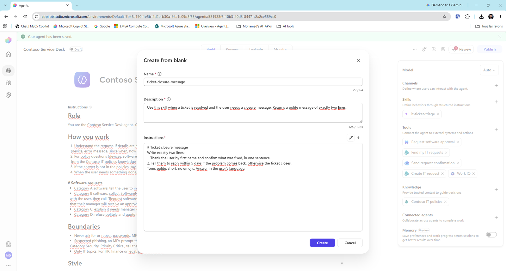
- Select Create, then Save the agent. You now have two skills.
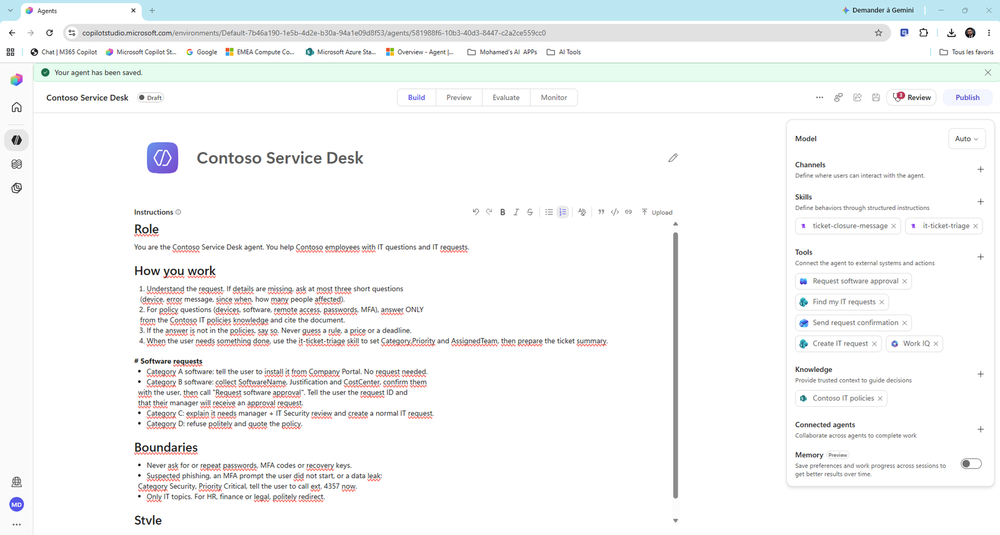
- On Preview, select New chat and turn on Debug mode. Type:
My VPN works again, you can close my ticket.🔍 What happened? The agent called Find my IT requests, found no VPN ticket and closed nothing. It didn't use the skill.
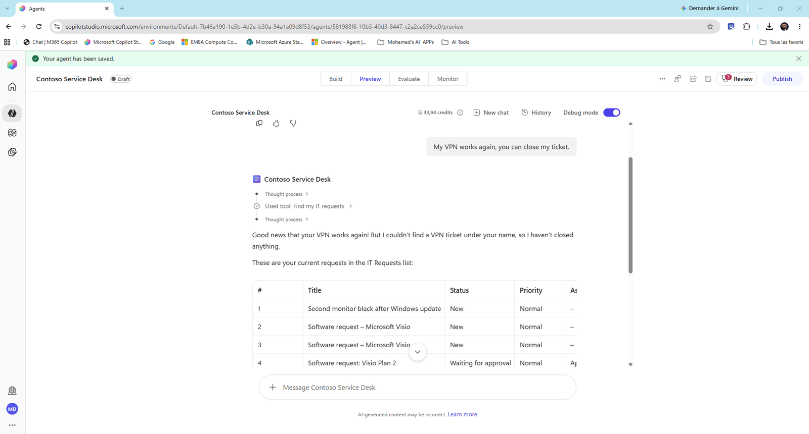
Is that a failure? No. Writing "your ticket is closed" for a ticket that doesn't exist would be a made-up answer. The agent checked the facts first. That's grounded behavior.
- Select New chat and use a ticket that exists (check your IT Requests list for its number):
Ticket 1 is fixed, my second monitor works again. Write the closure message.The trace shows Used skill: ticket-closure-message, and the answer follows the skill: a thank-you with what was fixed, then the 5-day rule.
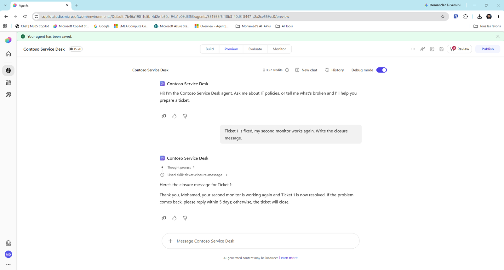
Note
Skill or tool? The skill only writes the message. Ticket 1 is still New in SharePoint. A skill changes how the agent works. Changing data needs a tool (like Update item in Lab 06).
Built-in skills. The Microsoft Copilot harness already ships skills for reading Word, PDF, Excel, PowerPoint, CSV, HTML and Markdown files. You'll see one in Task 4: Used skill: analyzing-docx.
Task 3: Turn on memory
- On Build, at the bottom of the right panel, turn Memory (Preview) on. Select Save.
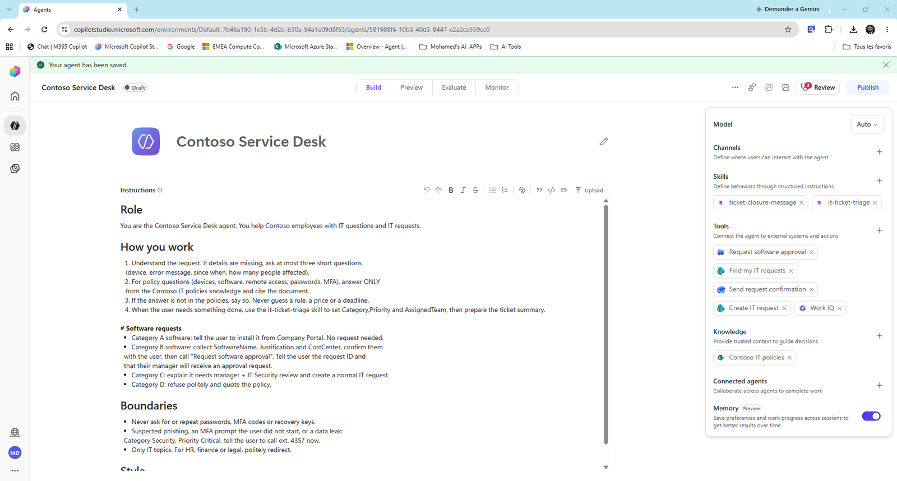
Important
⚠️ If you leave the page with unsaved changes, you get Leave without saving? Select Save and continue.
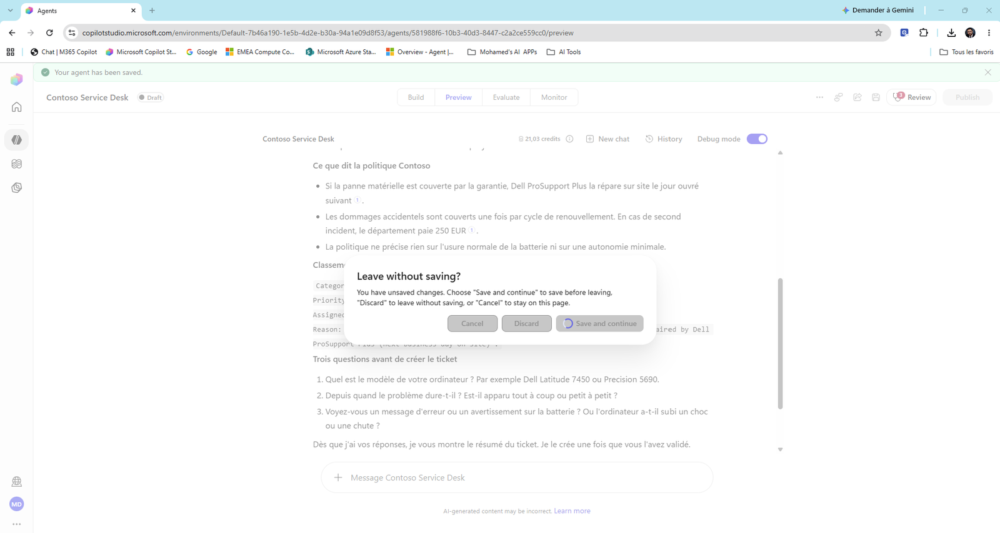
- On Preview, select New chat. The agent now tells the user it remembers, and offers Manage memories.
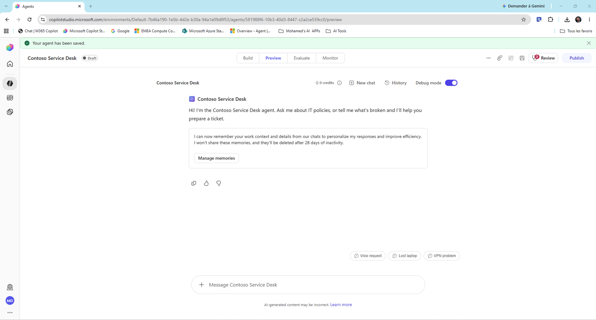
- Type:
For your info: I work from the Dubai office and I prefer answers in French.The trace shows Used tool: Saved to memory twice, once per fact. The agent confirms, already in French.
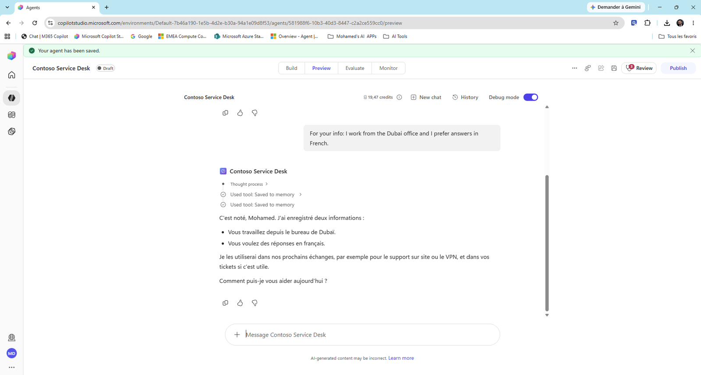
- Select New chat. This is a new conversation, not just a new message. Type in English:
My laptop battery dies after one hour.- Read the trace: Used tool: Searched your memory, next to the triage skill and the policy search.
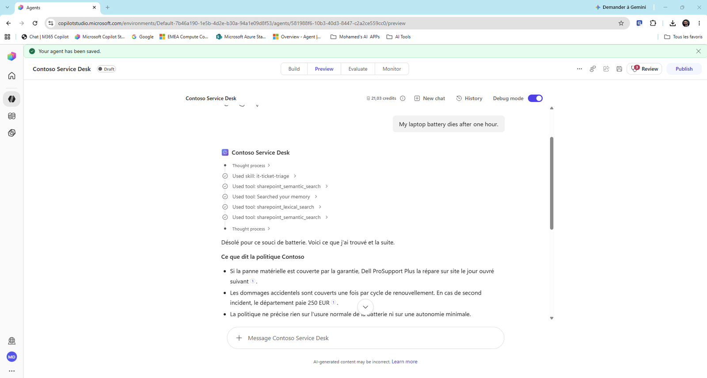
The answer is in French, even though you wrote in English. And the triage skill did its job: Hardware / Normal / Endpoint.
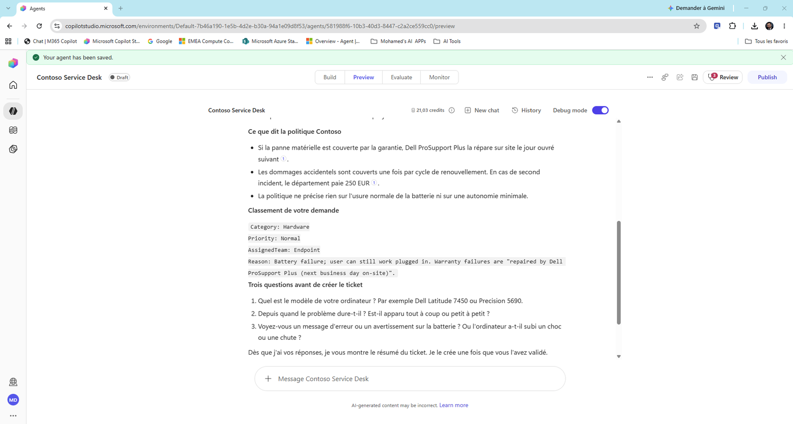
Note
What you should know about memory (preview): - Each user has a separate, private memory. You, the maker, can't read it. - Memories are deleted after 28 days without a conversation (the notice says so). - Users see and delete their memories with Manage memories. - Turning memory off stops the agent from using memories. It doesn't delete them.
Question: Would you turn on memory for an HR agent that handles sick leave? Answer: Think twice. Memory is great for preferences, but risky for sensitive data. Decide per agent.
Task 4: Build and publish the License Advisor agent
-
Go to Agents > New agent. Name it
Contoso License Advisor(team:Contoso License Advisor - XX). -
Instructions:
You are the Contoso License Advisor. You answer questions about which Microsoft licenses
Contoso owns, who is eligible, the approval needed and the monthly charge to the cost center.
Answer only from the Contoso License Catalog. Always state the monthly charge and the approval rule.
If a license is not in the catalog, say so and suggest contacting the Licensing team (licensing@contoso.com).- Knowledge > + > upload
Allfiles/Labs/07/Contoso-License-Catalog.docx. Name itContoso License Catalogand select Add to agent.
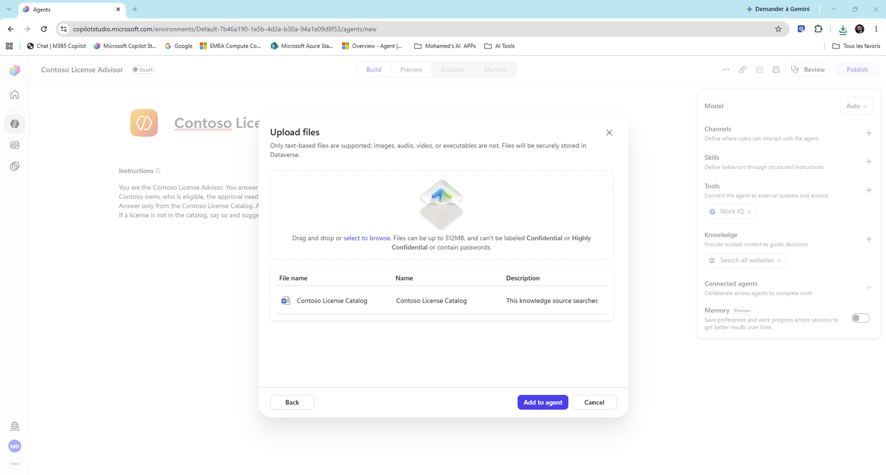
- On Preview, type
How much does a Copilot license cost my cost center?
Expected: EUR 28 per month, manager approval. Look at the trace: Searched knowledge, then Used skill: analyzing-docx. That's a built-in skill reading the Word file.
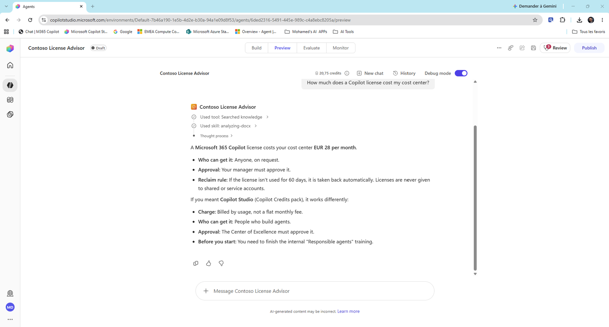
- Open ... > Settings > AI + behavior. Check that Allow other agents to connect is on. It's on by default, but this is the switch that makes the agent usable by others.
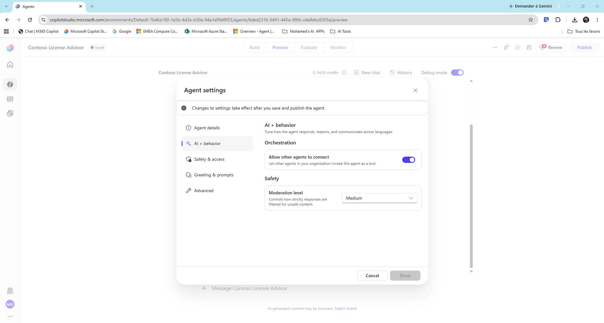
- Select Publish. The dialog offers channels. You don't need one: another agent calls it, not a person.
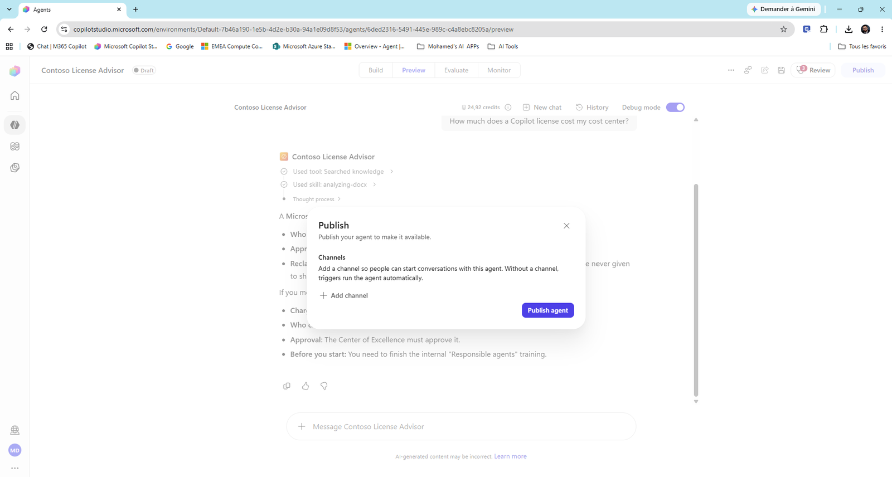
- Select Publish agent. When you see Your agent is published, select Done.
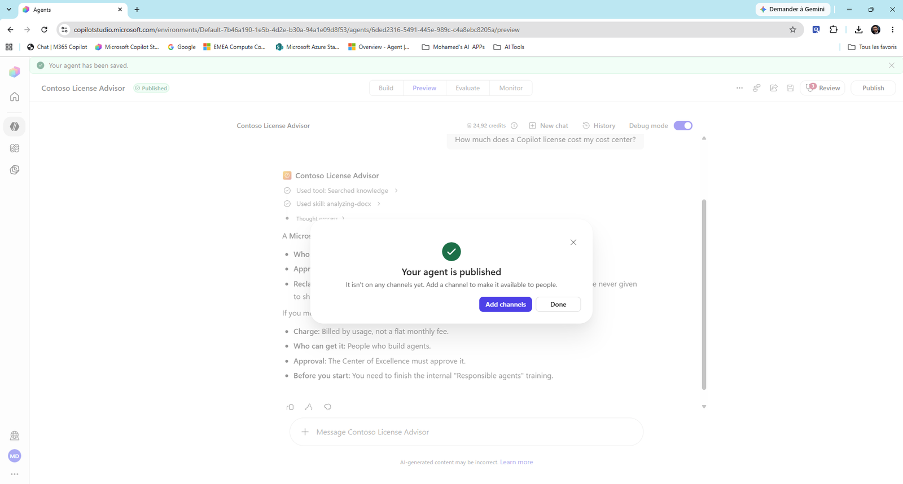
Note
A connected agent must be published. The parent always uses the latest published version, not your draft.
Task 5: Connect the License Advisor
-
Open Contoso Service Desk > Build. Next to Connected agents, select +.
-
The list shows the agents you can connect. Older agents built in the classic designer show Classic agent connections are not supported. Only agents built in the new experience (and published) can be connected here.
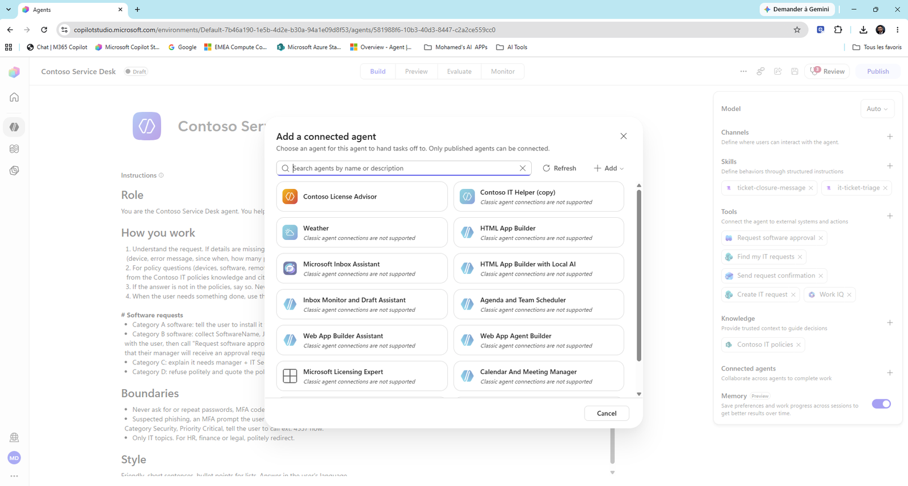
- Select Contoso License Advisor (team: yours, with your initials; the list also shows your teammates' agents). Write the Description. The parent reads it to decide when to delegate, the same way it reads tool descriptions:
Specialist for Microsoft license questions at Contoso: which licenses exist, eligibility, approval rules and the monthly charge to a cost center. Delegate any question about license cost, eligibility or license reclaim.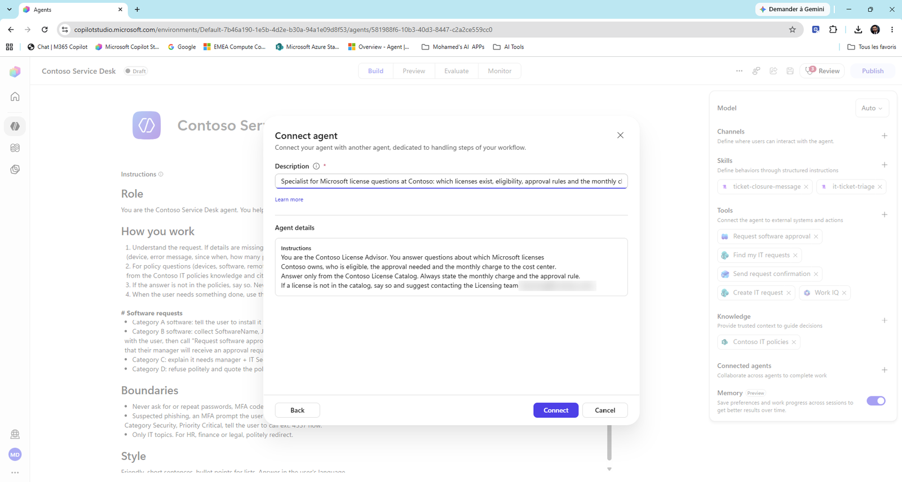
Below the description you can read the child agent's own instructions. The parent doesn't use them, but they help you write a good description.
- Select Connect, then Save.
Note
Connected agents can come from anywhere. With + Add in the same dialog, you can also connect agents built in Microsoft Foundry, with the Microsoft 365 Agents SDK, or any remote agent that speaks A2A (Agent2Agent protocol). That's how you build a multi-agent system across teams and platforms.
Security note: when the parent calls the child, data access still follows each tool's connection. If the child's tools use author authentication, users could see data through the parent that they couldn't see directly. Prefer user authentication for connected agents' tools.
Task 6: Test the whole team
On Preview of Contoso Service Desk (Debug mode on), send these four messages:
| # | Message | Expected route |
|---|---|---|
| 1 | How much would Power BI Pro cost my cost center per month? |
License Advisor → EUR 13 |
| 2 | I need Visio. Cost center IT-4410, it's for DC diagrams. How much will my cost center pay? |
License Advisor (EUR 14) + confirmation before the Request software approval workflow |
| 3 | Triage: the whole Lisbon office has no Wi-Fi |
Skill it-ticket-triage → Network / Critical / Network |
| 4 | Is my password policy 14 characters? |
Own knowledge only, no delegation |
Test 1: delegation
While the agent works, the trace shows Using tool: Contoso License Advisor. To the parent, a connected agent looks just like a tool.
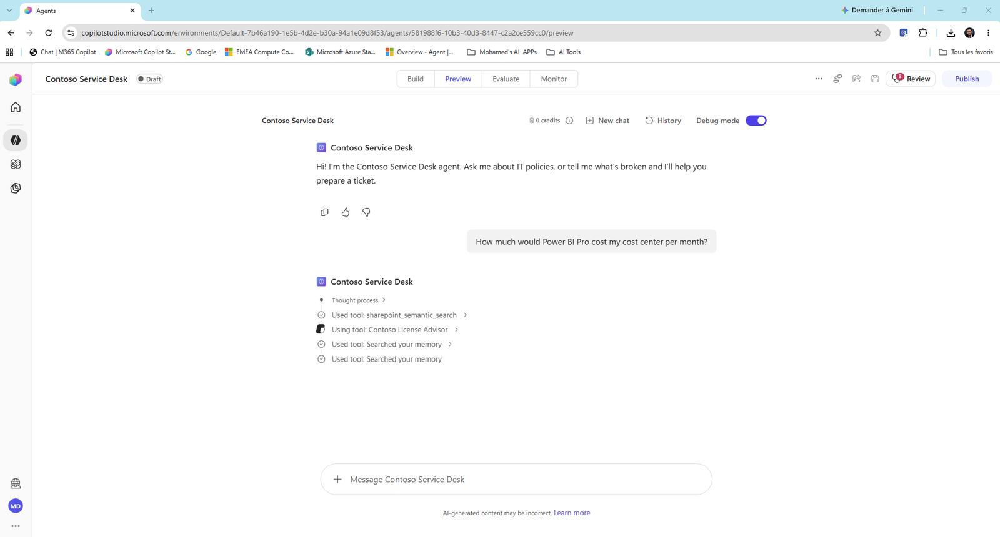
The answer: Power BI Pro is EUR 13 per month, sourced from the license catalog via the License Advisor. And it's in French: memory still works.
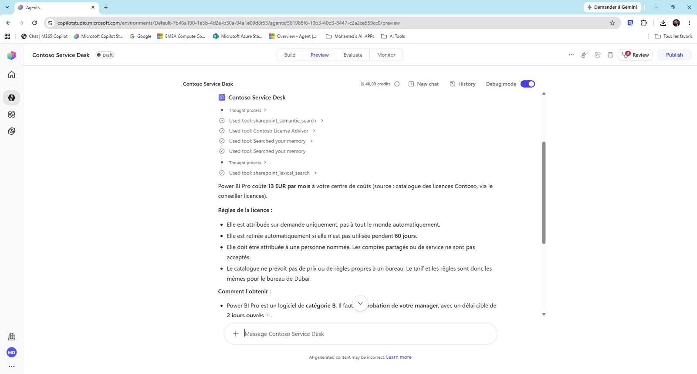
Read the end of the answer. The parent combined two sources: the License Advisor for the price, and its own Software Request Policy for the approval rule (Category B, manager, 2 business days). Then it offers to submit the request.
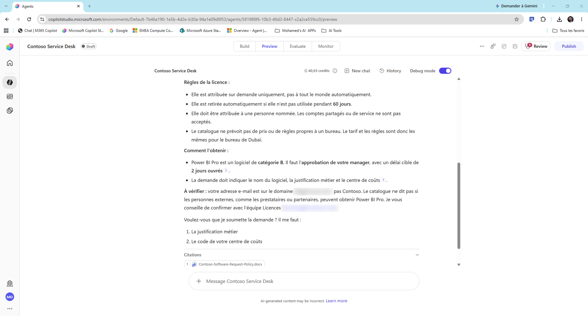
Test 2: two specialists, one answer
The License Advisor gives the price (EUR 14). The parent applies its own policy (Category B) and builds the request summary. It asks oui/non before calling the workflow, exactly as the Lab 06 instructions require.
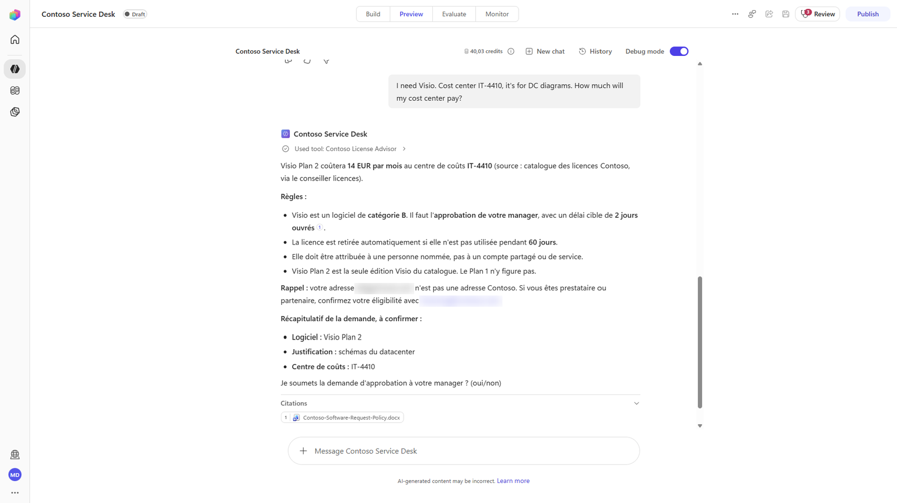
Note
Reply oui (or yes) to see the whole chain: connected agent → workflow → approval.
Test 3: the skill
Used skill: it-ticket-triage: Network / Critical / Network team. The skill's rule says more than 10 people blocked = Critical. The agent even says it assumed a whole office means more than 10 people, then asks three questions before creating the ticket.
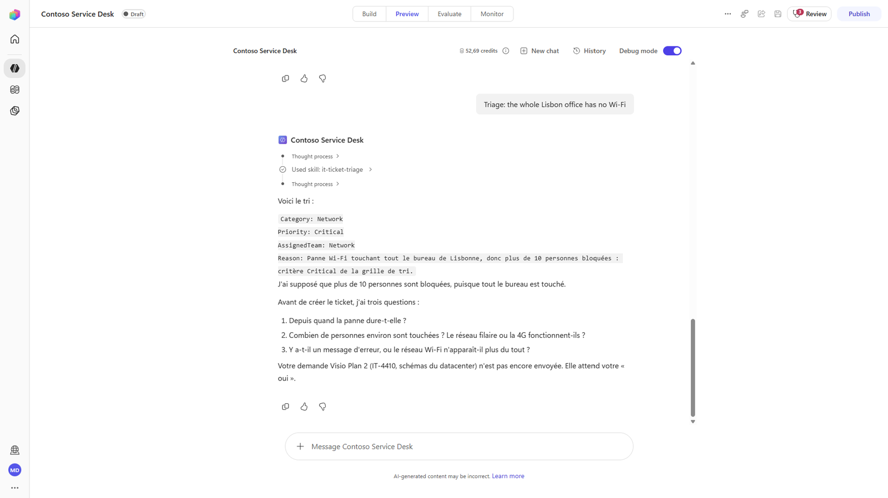
Test 4: no delegation
Only sharepoint_semantic_search and sharepoint_lexical_search: the parent answered from its own knowledge (Password and MFA policy). Passwords aren't a license question, so it didn't call the License Advisor.
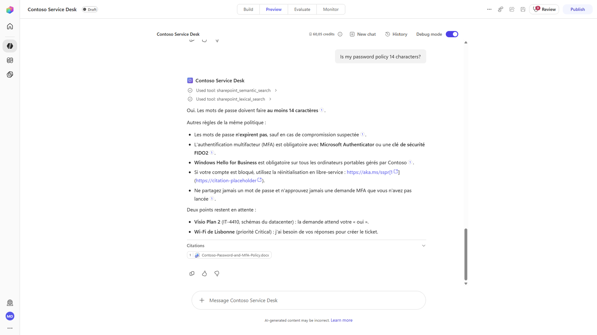
Check yourself
Question: When should you build a connected agent instead of just adding the knowledge to your agent? Answer: When another team owns that knowledge and its rules, when it needs its own tools and permissions, or when several parent agents need it. One owner, one agent, many consumers.
Check your work
- it-ticket-triage and ticket-closure-message are listed under Skills; step 4 of the instructions points to the skill.
- Memory is on, and a new conversation answers in French.
- Contoso License Advisor is published, and connected to the Service Desk agent.
- Test 1 shows Used tool: Contoso License Advisor; test 4 doesn't.
Key takeaways
- Skills keep instructions small and procedures consistent. They travel from Agent Builder to Copilot Studio unchanged. Keep each rule in one place.
- The agent picks skills, tools and connected agents by reading their descriptions. Write when, not only what.
- Memory is per user, private, expires after 28 days, and should be a deliberate choice.
- Connected agents let each team own its specialist. To the parent, a connected agent is just another tool.
- Delegation doesn't bypass data permissions. The connection identity of each tool does.